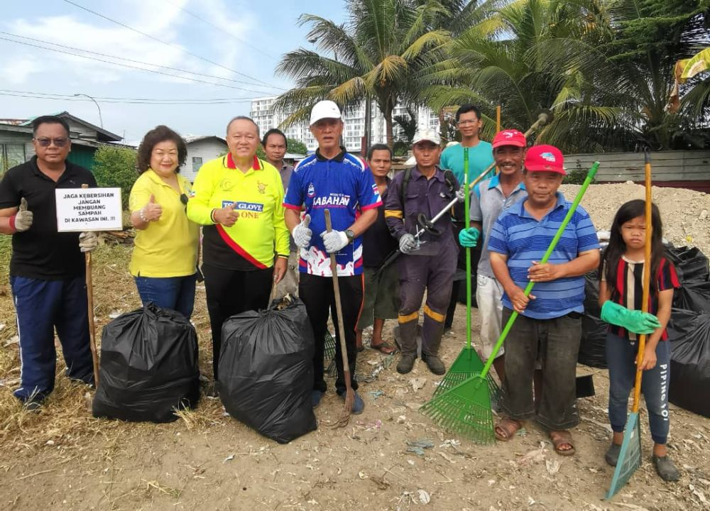
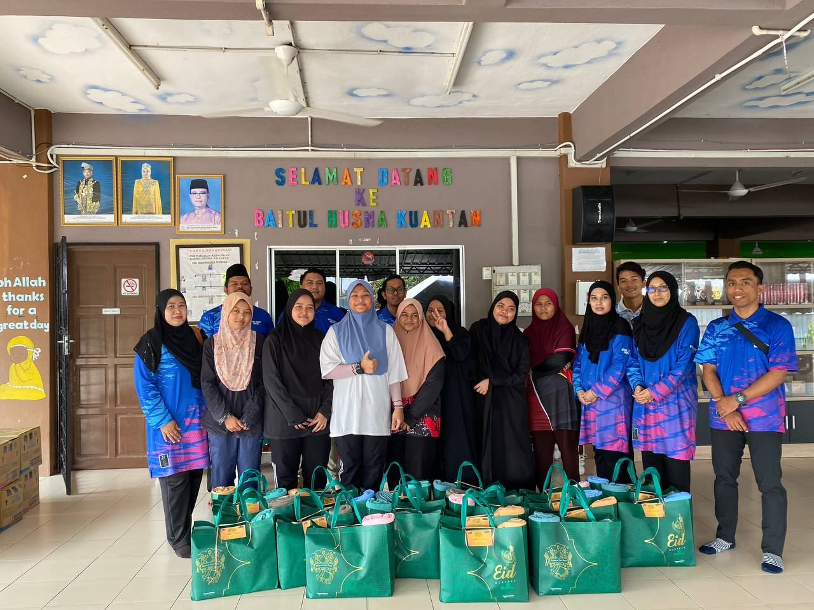
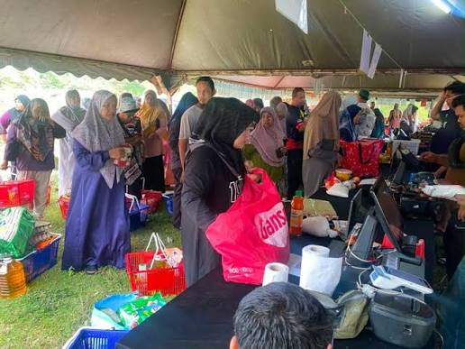
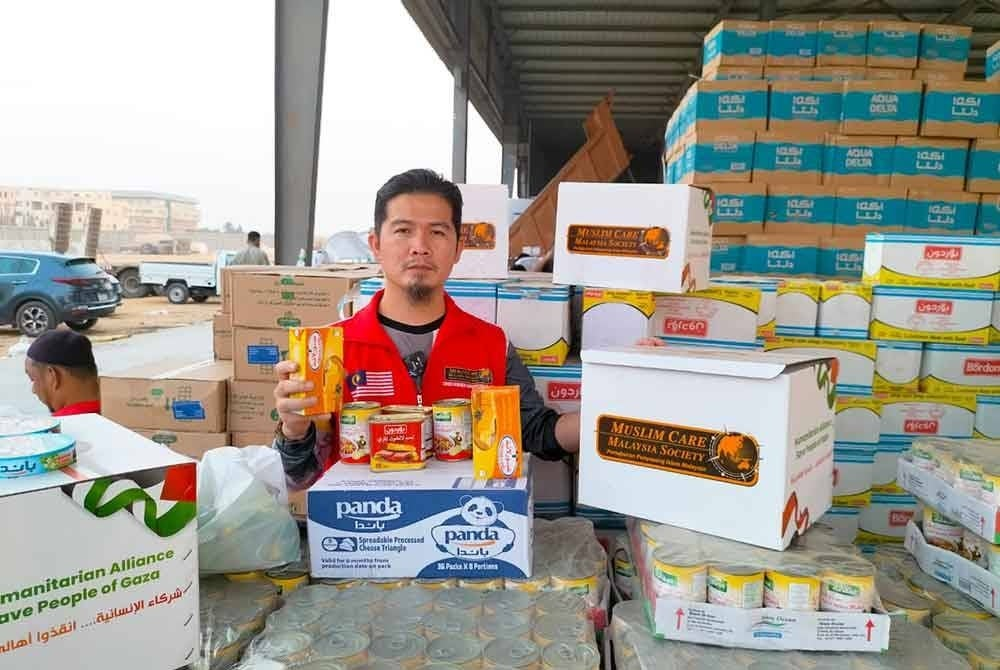

Kelab Rakan Sukarela Muda
Kelab Rakan Sukarela Muda
Kelab Rakan Sukarela Muda
Kelab Rakan Sukarela Muda
Paparan sorotan aktiviti kemasyarakatan dan senarai program akan datang
Sertai kami dalam program kesukarelawanan terdekat di negeri anda
| Tarikh | Nama Program | Lokasi / Negeri | Status | Tindakan |
|---|---|---|---|---|
| 15 Nov 2026 | Misi Bantuan Dapur Rakyat | Kuala Lumpur | Pendaftaran Dibuka | Sertai (RSVP) |
| 28 Nov 2026 | Kempen Penanaman 1,000 Pokok | Selangor | Pendaftaran Dibuka | Sertai (RSVP) |
| 10 Dis 2026 | Klinik Bimbingan Subjek SPM | Perak | Akan Datang | Belum Dibuka |
Momen kebersamaan sukarelawan berbakti kepada masyarakat

Aktiviti menjaga kelestarian alam sekitar di persisiran pantai.

Penyerahan kelengkapan dan bantuan makanan asas.

Kutipan sumbangan bagi tabung bantuan kecemasan.

Sumbangan tenaga dan pengagihan barangan asas.